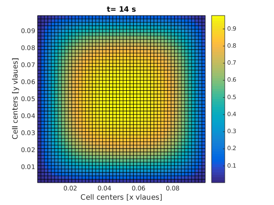

2D transient diffusion equation; numerical FVM solution
Important Update: the codes in this post will not work with the new version of FVTool. Download the old version of FVTool here.
A time dependent diffusion problem
In my last post, I promised to solve a time dependent conduction problem. Indeed I tried to keep my promise by writing a full post about single phase compressible flow in porous media. But in the middle of writing, I noticed that there are too many things that need to be clarified before we can jump into that problem. Therefore, I decided to hold my horses and only solve a simple time-dependent diffusion problem. I this post, you are going to learn how to define the initial conditions and use a for loop for time steps.
This blog's icon
If you look carefully at this open tab in your browser, you see a colorful icon that looks like a bad design for a gay flag. It is nothing but a square domain, which has been initially at a concentration c=1.0, and suddenly its boundaries are exposed to an environment at a zero concentration, c=0.0 and mass starts moving out of the domain only by diffusion mechanism. As simple as that!
We gaan beginnen
The equation for this problem reads
$$\frac{\partial c}{\partial t} +\nabla.(-D \nabla c) = 0$$
where D [m^2/s] is the diffusion coefficient and c [mol/m^3] is the concentration. The boundary conditions are all Dirichlet, i.e.,
$$ c=0 $$
The coding steps are as always in the following sequence:
- Geometry and mesh
- Boundary condition
- Initial condition
- Matrix of coefficients
- Linear solver
The geometry can be defined as
clc; clear; close all; L = 0.1; % [m] length of the domain H = 0.1; % [m] height of the domain Nx = 50; % number of grids in x direction Ny = 50; % number of grids in y direction m = createMesh2D(Nx, Ny, L, H); % create the mesh
Then the boundary conditions are defined. Just as a reminder, the boundaries are defined by the following general relation:
$$ a \nabla \phi.\mathbf{n}+b \phi = c$$
The code for specifying the boundary condition and finding the matrix of coefficients for the boundary nodes is written as
bc = createBC(m); bc.left.a(:)=0; bc.left.b(:)=1; bc.left.c(:)=0; bc.right.a(:)=0; bc.right.b(:)=1; bc.right.c(:)=0; bc.top.a(:)=0; bc.top.b(:)=1; bc.top.c(:)=0; bc.bottom.a(:)=0; bc.bottom.b(:)=1; bc.bottom.c(:)=0; [M_bc, RHS_bc] = boundaryCondition(m, bc);
Now is time to learn something new: defining initial conditions. We remember that the variables are build over the domain using the createCellVariable function. We used it before to assign a conductivity value to each cell in the domain. We don't need to assign transfer coefficients to the ghost cells. Now, if we need to define a cell variable which also has value on the ghost cell. The value on the ghost cells should be consistent with the boundary condition. Therefore, we send the boundary condition as an extra input the the createCellVariable function. The function will take care of the rest!
One more thing. The initial condition must be assigned to a structure that is called Old. In fact, the transitionTerm that returns the matrix of coefficients for the transient term needs the initial conditon to be written this way.
D_val = 1e-5; % [m^2/s] diffusion coefficient D = createCellVariable(m, D_val); % assign diff. coef. to each cell D_face = geometricMean(m, D); % average of diff. coef. on cell faces M_diff = diffusionTerm(m, D_face); c_init = 1.0; % [mol/m^3] initial concentration c.Old = createCellVariable(m, c_init, bc); % initial condition alfa = createCellVariable(m, 1.0); % it will be required later
The next step is to define the time steps and the final time of the simulation. Normally, for a diffusion problem, we can choose a time step based on the length of the domain and the diffusion coefficient, i.e., a fraction of $L^2/D$. In Matlab, we can write
t_end = 0.2*L^2/D_val; % [s] final time dt = t_end/100; % [s] time step
And the final part. We have to solve the PDE literally step by step, in a loop. We start from the initial condition (t=0) and find the concentration profile for t=dt. Then we use the new concentration profile as the initial condition and solve the PDE for the next time step and so on. The Matlab code for this procedure reads
for t = 0:dt:t_end % This part must be inside the time loop: [M_trans, RHS_trans] = transientTerm(m, alfa, dt, c); c_new = solvePDE(m, M_bc+M_trans-M_diff, RHS_trans+RHS_bc); c.Old = c_new; % replace the old value with the new time step visualizeCells(m, c_new); title(['t= ' num2str(t) ' s']); drawnow; end
The code will show you how the material escapes the square domain through the boundaries. We can do a bit of mass balance test on the whole thing, which I will explain later.
This is the code in one piece:
clc; clear; close all; L = 0.1; % [m] length of the domain H = 0.1; % [m] height of the domain Nx = 50; % number of grids in x direction Ny = 50; % number of grids in y direction m = createMesh2D(Nx, Ny, L, H); % create the mesh bc = createBC(m); bc.left.a(:)=0; bc.left.b(:)=1; bc.left.c(:)=0; bc.right.a(:)=0; bc.right.b(:)=1; bc.right.c(:)=0; bc.top.a(:)=0; bc.top.b(:)=1; bc.top.c(:)=0; bc.bottom.a(:)=0; bc.bottom.b(:)=1; bc.bottom.c(:)=0; [M_bc, RHS_bc] = boundaryCondition(m, bc); D_val = 1e-5; % [m^2/s] diffusion coefficient D = createCellVariable(m, D_val); % assign diff. coef. to each cell D_face = geometricMean(m, D); % average of diff. coef. on cell faces M_diff = diffusionTerm(m, D_face); c_init = 1.0; % [mol/m^3] initial concentration c.Old = createCellVariable(m, c_init, bc); % initial condition alfa = createCellVariable(m, 1.0); % it will be required later t_end = 0.1*L^2/D_val; % [s] final time dt = t_end/100; % [s] time step for t = 0:dt:t_end [M_trans, RHS_trans] = transientTerm(m, alfa, dt, c); c_new = solvePDE(m, M_bc+M_trans-M_diff, RHS_trans+RHS_bc); c.Old = c_new; visualizeCells(m, c_new); title(['t= ' num2str(t) ' s']); drawnow; end
One of the frames in your final result should look like this: 